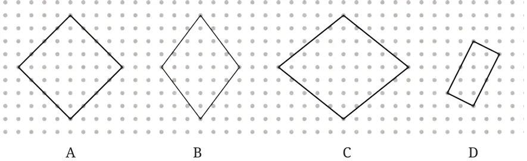

<!DOCTYPE html>
<html lang="en">
<head>
<meta charset="UTF-8">
<meta name="viewport" content="width=device-width,initial-scale=1">
<title>Figure it Out — Playing with Constructions</title>
<meta name="description" content="Class 6 Mathematics · Playing with Constructions · Figure it Out">
<link rel="icon" href="data:image/svg+xml,<svg xmlns='http://www.w3.org/2000/svg' viewBox='0 0 100 100'><text y='.9em' font-size='90'>📘</text></svg>">
<link rel="stylesheet" href="../../../assets/book.css">
<link rel="stylesheet" href="https://cdn.jsdelivr.net/npm/katex@0.16.11/dist/katex.min.css" crossorigin="anonymous">
</head>
<body>
<header class="topbar">
<div class="topbar-in">
  <div class="crumb">
    <span class="c1"><a href="../../../index.html">Library</a> · <a href="../../index.html">Class 6 Mathematics</a></span>
    <span class="c2">Playing with Constructions · Figure it Out</span>
  </div>
  <a class="tb-btn" data-nav="prev" href="../../08-playing-with-constructions/03-squares-and-rectangles-8.2/index.html" title="8.2 Squares and Rectangles">←</a>
  <details class="drawer"><summary class="tb-btn" title="Sections in this chapter">☰</summary>
<div class="drawer-panel"><div class="dh">Playing with Constructions</div><a href="../01-artwork-8.1/index.html">8.1 Artwork</a><a href="../02-figure-it-out/index.html">Figure it Out</a><a href="../03-squares-and-rectangles-8.2/index.html">8.2 Squares and Rectangles</a><a href="../04-figure-it-out/index.html" aria-current="page">Figure it Out</a><a href="../05-constructing-squares-and-rectangles-8.3/index.html">8.3 Constructing Squares and Rectangles</a><a href="../06-an-exploration-in-rectangles-8.4/index.html">8.4 An Exploration in Rectangles</a><a href="../07-exploring-diagonals-of-rectangles-and-squares-8.5/index.html">8.5 Exploring Diagonals of Rectangles and Squares</a><a href="../08-summary/index.html">Summary</a><a href="../09-solutions/index.html">CHAPTER 8 — SOLUTIONS</a></div></details>
  <a class="tb-btn" data-nav="next" href="../../08-playing-with-constructions/05-constructing-squares-and-rectangles-8.3/index.html" title="8.3 Constructing Squares and Rectangles">→</a>
  <button class="tb-btn" data-theme-toggle title="Toggle light / dark" aria-label="Toggle light or dark theme">◐</button>
</div>
<div class="progress"><span style="width:69.6%"></span></div>
</header>
<main class="wrap">
<div class="sec-head">
  <p class="eyebrow"><a href="../index.html">Chapter 8 · Playing with Constructions</a></p>
  <h1>Figure it Out</h1>
  <p class="sec-meta">Textbook pages 8–9 · 4 figures</p>
</div>
<article class="prose">
<ul class="qlist">
<li><span class="mk">1.</span><span class="lt">Draw the rectangle and four squares configuration (shown in</span></li>
</ul>
<p>Fig. 8.3) on a dot paper. What did you do to recreate this figure so that the four squares are placed symmetrically around the rectangle? Discuss with your classmates.</p>
<ul class="qlist">
<li><span class="mk">2.</span><span class="lt">Identify if there are any squares in this collection.</span></li>
</ul>
<p>Use measurements if needed.</p>
<figure class="fig wide"></figure>
<p>Think: Is it possible to reason out if the sides are equal or not, and if the angles are right or not without using any measuring instruments in the above figure? Can we do this by only looking at the position of corners in the dot grid?</p>
<ul class="qlist">
<li><span class="mk">3.</span><span class="lt">Draw at least 3 rotated squares and rectangles on a dot grid. Draw</span></li>
</ul>
<p>them such that their corners are on the dots. Verify if the squares and rectangles that you have drawn satisfy their respective properties.</p>
</article>
<nav class="pager"><a class="" data-nav="prev" href="../../08-playing-with-constructions/03-squares-and-rectangles-8.2/index.html"><span class="dir">← Previous</span><span class="t">8.2 Squares and Rectangles</span><span class="ch">Playing with Constructions</span></a><a class="nx" data-nav="next" href="../../08-playing-with-constructions/05-constructing-squares-and-rectangles-8.3/index.html"><span class="dir">Next →</span><span class="t">8.3 Constructing Squares and Rectangles</span><span class="ch">Playing with Constructions</span></a></nav>
</main><footer class="site">Generated from the source textbook PDFs · text, figures and exercises belong to their respective publishers.</footer><script defer src="https://cdn.jsdelivr.net/npm/katex@0.16.11/dist/katex.min.js" crossorigin="anonymous"></script>
<script defer src="https://cdn.jsdelivr.net/npm/katex@0.16.11/dist/contrib/auto-render.min.js" crossorigin="anonymous"
  onload="renderMathInElement(document.body,{delimiters:[
    {left:'\\(',right:'\\)',display:false},
    {left:'$$',right:'$$',display:true},
    {left:'\\[',right:'\\]',display:true}],throwOnError:false,ignoredTags:['script','noscript','style','textarea','pre','code']})"></script>
<script src="../../../assets/book.js"></script>
<script defer src="../../../../assets/search.js?v=1789782769"></script>
<script defer src="../../../../assets/screenshot.js?v=1789782769"></script>
</body>
</html>
